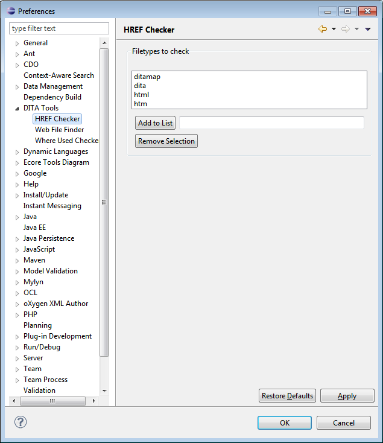
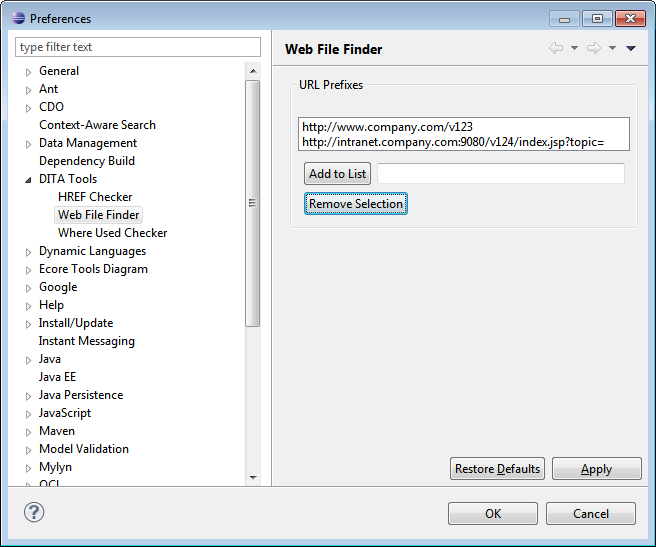
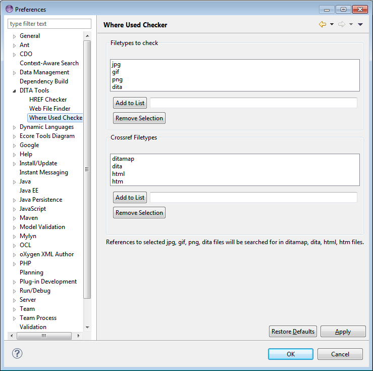

Use the Window > Preferences > DITA Tools page to set how you want the DITA Tool to operate.
For HREF Checker, the default is to scan ditamap, dita, html and htm filetypes. In the preferences this list may be modified.
For the DITA Web File Finder, one or more URL prefixes can be set to allow a simple one-click mapping from dita, htm and html source files to their equivalent web pages.
For Where Used Checker, the default is to look for reference to any jpg, gif, png and dita filetypes within ditamap, dita, html and htm files. In the preferences these lists may be modified.
